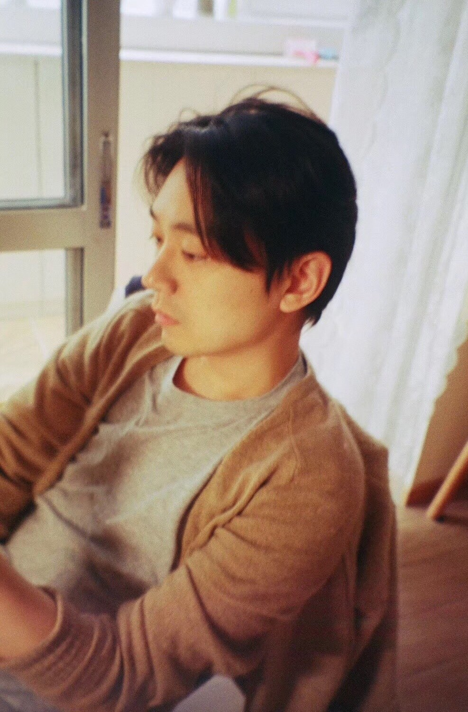
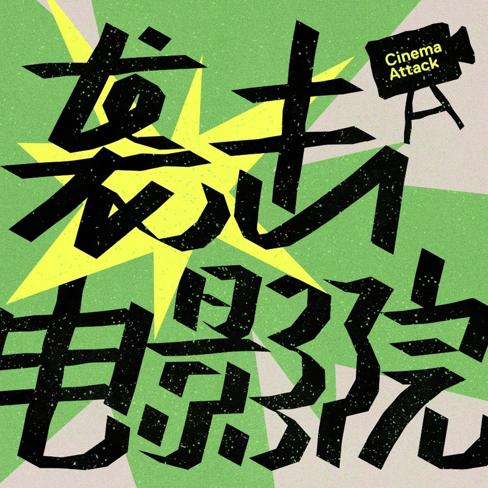
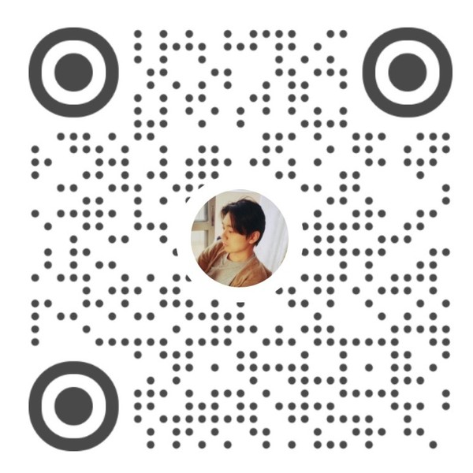

东亚作者电影与剧集
韩国、日本、香港电影与剧集的作者性与产业脉络，从院线到 Disney+ 的评论追踪。
影视 · 戏剧评论 / 播客制作 / 文化记者
我是杨祖占（Julian Yang），常驻上海的自由撰稿人与影视戏剧评论人。为《三联生活周刊》《看电影》撰写长文，主理播客「袭击电影院」，长期关注东亚电影、精品动画、热门剧集与流行文化。

我长期从事影视文化写作，写作横跨影视评论、戏剧评论与文化观察。长期为《三联生活周刊》《看电影》撰写文章，多数达到十万以上阅读量，也负责过电影节报道与统筹。
我关注艺术电影与独立创作，也追踪主流剧集与精品动画——从韩国、日本、香港的作者电影，到好莱坞奥斯卡话题作、Disney+ 韩剧与迪士尼动画，再到英国剧场与NTLive。除了写字，我和另一位电影媒体人共同主理播客「袭击电影院」。
主要以中文写作，英文亦可采访与国际约稿。如果你在找一个能同时驾驭批评深度与大众传播、并能跨语言工作的合作者，我们大概能聊得来。
韩国、日本、香港电影与剧集的作者性与产业脉络，从院线到 Disney+ 的评论追踪。
奥斯卡话题作、名导新片与英美高口碑剧集的深度评论与解析。
迪士尼、皮克斯与日本动画——从《攻壳机动队》到《疯狂动物城2》的美学与产业观察。
剧场作品、文学改编与NTLive等舞台影像，关注文本与舞台的转译。
精选近期具代表性的评论与解析。完整文章见下方「文章」列表。
按时间排列的文章流，主要发表于《三联生活周刊》官方微信公众号，也包括《剧焦》等媒体。此列表持续更新。
《看电影》（Movieview）是国内领先的影评纸本杂志。作为“剧集贩”专栏的固定撰稿人，我每月为全球新剧撰写评论。以下为杂志数字版各期中发表文章的扫描图（点击可看大图）。

两个从业多年的电影媒体人（祖占、唐朝）共同发起的一档播客节目。从文字到语言，用声音与对话，碰撞新的火花——聊电影、聊剧集、聊行业。
影视、戏剧、文化类长文与评论；可承接中文、英文选题。
受邀参与节目录制，或就影视戏剧议题做深度对谈。
电影节现场报道、场刊撰写、映后主持与统筹协调。
中英法之间的采访、写作与内容适配，服务国际约稿。
编辑约稿、嘉宾邀约、活动合作都欢迎来信。我通常一到两个工作日内回复。

常驻上海 · 可远程与跨时区协作